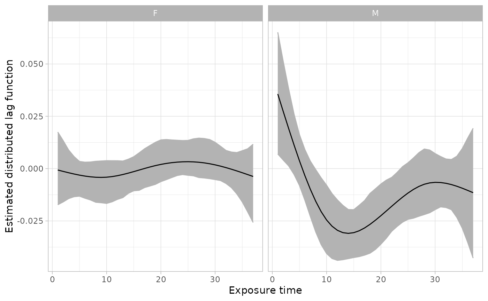

Install and load package
The package can be installed from GitHub with the command:
remotes::install_github("anderwilson/bdlim")Fit model
The code chunk below fits the model. In comparison to the examples,
this uses a large number of iterations (20000). See comments below on
convergence and choosing the number of iterations. More iterations takes
longer. This can be partially offset by using parallel computing. The
BDLIM fits and compares 4 models. Setting parallel=TRUE
will run those four models in parallel. This reduces the computation
time by 2-4 fold. If you have at least 4 cores on your computer (and you
almost certainly do) it is advised to use parallel computing.
# set seed so we get same results when rerunning
set.seed(1234)
# fit model
fit_sex <- bdlim4(
y = sbd_bdlim$bwgaz,
exposure = sbd_bdlim[,paste0("pm25_",1:37)],
covars = sbd_bdlim[,c("MomPriorBMI","MomAge","race","Hispanic",
"EstMonthConcept","EstYearConcept")],
group = as.factor(sbd_bdlim$ChildSex),
df = 5,
nits = 30000,
nthin = 15,
parallel = FALSE
)
#> fitting bw
#> fitting b
#> fitting w
#> fitting n
#> postprocessingpostprocessingThis will return an object of class bdlim4 that contains
the posterior sample from all four models.
View results
Next step is to view the results. First, we can compare model fits for the four patterns of modification. In this case the BDLIM-bw model, the model that has different effect sizes and weight functions for each group, had the highest posterior model probabilities. We will use that model as our primary model.
fit_sex
#>
#> Call:
#> bdlim4(y = sbd_bdlim$bwgaz, exposure = sbd_bdlim[, paste0("pm25_",
#> 1:37)], covars = sbd_bdlim[, c("MomPriorBMI", "MomAge", "race",
#> "Hispanic", "EstMonthConcept", "EstYearConcept")], group = as.factor(sbd_bdlim$ChildSex),
#> df = 5, nits = 30000, nthin = 15, parallel = FALSE)
#>
#> Modification pattern probabilities (higher is better fit):
#> *bw* b w n
#> 0.482 0.380 0.138 0.000
#>
#> Modification pattern WAIC (lower is better fit):
#> *bw* b w n
#> 1 1636.713 1637.334 1645.997 1655.655
#>
#> Note: Model probabilities tend to favor more complex models compared to WAIC. It is recomended to use model probabilities for selecting the modification pattern and WAIC to compare degrees of freedom for the weight function.Next, the summary allows us to view some model output and make the calculations needed to view plots. The summary function automatically reports results for the best fitting model (BDLIM-bw in this case). The key elements of the summary function are:
- model fit statistics: posterior model probabilities and WAIC. Posterior model probabilities are used to determine which pattern of modification is best supported by the data. WAIC is used to compare other hyperparameters, mainly df used for the spline basis.
- posterior summary of the cumulative effect: The posterior mean, standard deviation, and credible intervals are provided for each group. These are provided even when there is no between group differences.
- posterior summary of covariate regression coefficients: The posterior mean, standard deviation, and credible intervals are provided for the regression coefficients for all covariates and the group-specific intercepts.
sfit_sex <- summary(fit_sex)
sfit_sex
#>
#> Call:
#> bdlim4(y = sbd_bdlim$bwgaz, exposure = sbd_bdlim[, paste0("pm25_",
#> 1:37)], covars = sbd_bdlim[, c("MomPriorBMI", "MomAge", "race",
#> "Hispanic", "EstMonthConcept", "EstYearConcept")], group = as.factor(sbd_bdlim$ChildSex),
#> df = 5, nits = 30000, nthin = 15, parallel = FALSE)
#>
#>
#> Model fit statistics:
#> *bw* b w n
#> 0.482 0.380 0.138 0.000
#>
#>
#> Estimated cumulative effects:
#> group mean median sd q2.5 q97.5 pr_gr0
#> F -0.01996537 -0.01116722 0.06173352 -0.1592589 0.09320239 0.376
#> M -0.43748182 -0.43993513 0.08978120 -0.6136661 -0.26136656 0.000
#>
#>
#> Estimated covariate regression coefficients:
#> name mean median sd q2.5
#> interceptF 5.542539710 5.361643369 6.455730061 -6.605091803
#> interceptM 5.928921912 5.726158364 6.462350001 -6.068557082
#> MomPriorBMI -0.015922033 -0.015856445 0.003113355 -0.022302266
#> MomAge 0.001052711 0.001105497 0.003026531 -0.005237028
#> raceAsianPI -0.020662488 -0.025817898 0.175794730 -0.351087371
#> raceBlack -0.104355974 -0.098103572 0.182767996 -0.464357684
#> racewhite -0.051776442 -0.049828746 0.167088358 -0.373812251
#> HispanicNonHispanic 0.256155829 0.258263547 0.039782043 0.176213136
#> EstMonthConcept2 -0.144832856 -0.144357270 0.093874140 -0.324190930
#> EstMonthConcept3 -0.100401264 -0.102153917 0.093697787 -0.285047111
#> EstMonthConcept4 -0.175400307 -0.172983303 0.096748780 -0.361520490
#> EstMonthConcept5 -0.095611210 -0.098352695 0.086585664 -0.264477009
#> EstMonthConcept6 -0.187086019 -0.189775799 0.086229221 -0.353317185
#> EstMonthConcept7 -0.039754507 -0.040550942 0.090225036 -0.216822957
#> EstMonthConcept8 0.164171437 0.161201992 0.098743048 -0.017793755
#> EstMonthConcept9 0.326192009 0.327068687 0.098071849 0.138106359
#> EstMonthConcept10 0.427466957 0.426079004 0.096159528 0.247439759
#> EstMonthConcept11 0.232178945 0.232086775 0.088508700 0.070682081
#> EstMonthConcept12 0.079444560 0.077420724 0.086425784 -0.084480482
#> EstYearConcept -0.002051681 -0.002003086 0.003196426 -0.008412307
#> q97.5 pr_gr0
#> 18.652633969 0.805
#> 18.899446172 0.817
#> -0.010041690 0.000
#> 0.006871272 0.642
#> 0.312310788 0.446
#> 0.230197621 0.293
#> 0.254621844 0.370
#> 0.329505769 1.000
#> 0.045097866 0.063
#> 0.080724499 0.153
#> 0.019849679 0.036
#> 0.071821119 0.140
#> -0.014525198 0.017
#> 0.134900334 0.339
#> 0.353406132 0.952
#> 0.520411182 1.000
#> 0.620000428 1.000
#> 0.417514368 0.997
#> 0.239098390 0.818
#> 0.003952321 0.258
#>
#>
#> BDLIM fit on 1000 observations. Estimated residual standard deviation is 0.541 (0.518,0.566). WAIC is 1636.713.
#>
#> Use `plot(); for the summary.bdlim4 object to view estimated distributed lag functions. The `dlfun' object in the summary object contains estimates of the lag functions.Finally, we can plot the results. The plots show the estimated distributed lag function for each group. This is interpreted as the effect of a one unit change in exposure at a single time point while holding everything else constant.
plot(sfit_sex)
Check for convergence
Valid inference requires a sufficient posterior sample. There are three parameters that control the MCMC:
-
nitsis the number of iterations and should be be large (20000 - 100000). -
nburnis the number of iterations that should be discarded as burn in. This is set to half of the total number of iterations. This can generally be left unspecified unless. -
nthinis the thinning factor. The sampler will keep every niter iterations between the nburn and niter. Ideally, we would like to have a decently large posterior sample (e.g. 2000-10000). Therefore, we want(nits-nburn)/nthinto be equal to something in that range.
Comparing multuiple chains
To check for convergence, it is advised that you run the model a few times with different seeds. Then, compare the results between the change. If the results are very similar then it is likely that the model as converged. If they are different, increase the number of iterations.
Trace plots
Trace plots can be made from the posterior. For example, a trace plot from the BDLIM-bw model for 2 times in the distributed lag function for the first group can be made as shown below.
plot(fit_sex$fit_bw$dlfun[[1]][,10], type="l", las=1) 
plot(fit_sex$fit_bw$dlfun[[1]][,25], type="l", las=1) 
Other MCMC diagnostics can be performed by directly using the posterior sample as illustrated with the trace plot.
Selecting degrees of freedom
The weight function uses a orthonormal version of a natural spline.
The number of degrees of freedom must be selected with df.
Generally, the degrees of freedom are 3, 4, 5, or 6. To select degrees
of freedom, consider fitting models with a few choices. Then compare the
WAIC between models (provided in the summary). A lower WAIC indicates
better model fit. Also visually compare the distributed lag function
estimates.
Improve plots
The graphs provided by the plot function are unlikely to
be sufficient for publications or presentations. At a minimum, the axis
labels are not specific enough. There are two ways to improve the
graphs.
The first way is to make minor edits to the graph with
ggplot2. In the example below, the plot is saved as the
object plt. Then, a title and better y-axis label is
added.
library(ggplot2)
# save plot
plt <- plot(sfit_sex)
# edit plot
plt <- plt + ggtitle("My plot with BDLIM") +
ylab("Estimated expected difference in\nBWGAZ per 1 ug/m3 increase in exposure")
# display new plot
plt
The second option is to make an entirely new plot from the posterior
estimate obtained from the summary function.
ggplot(sfit_sex$dlfun, aes(x=time, y=mean, ymin=q2.5, ymax=q97.5, color=group, fill=group)) +
geom_ribbon(color=NA, alpha=.6) + geom_line() +
theme_light() +
ggtitle("My plot with BDLIM") +
ylab("Estimated expected difference in\nBWGAZ per 1 ug/m3 increase in exposure") +
xlab("Gestational age (exposure time)")